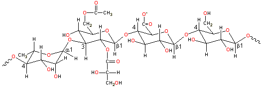

Gellan gum (E418)
is a bacterial exopolysaccharide, discovered through the screening
of thousands of bacteria and prepared commercially by aerobic submerged
fermentation from Sphingomonas elodea (previously called Pseudomonas elodea) [502],
like xanthan.
Partial gellan structure, -4)-L-Rhap-(α-1-3)-D-Glcp-(β-1-4)-D-GlcpA-(β-1-4)-D-Glcp-(β-1-

Gellan gum is a linear tetrasaccharide  4)-L-rhamnopyranosyl-(α-1
4)-L-rhamnopyranosyl-(α-1 3)-D-glucopyranosyl-(β-1
3)-D-glucopyranosyl-(β-1 4)-D-glucuronopyranosyl-(β-1
4)-D-glucuronopyranosyl-(β-1 4)-D-glucopyranosyl-(β-1
4)-D-glucopyranosyl-(β-1 with O(2) L-glyceryl and O(6) acetyl substituents on the 3-linked
glucose [1570]. It has a high relative molecular mass (molecular weight), consisting of about 50,000
residues,. It is usually de-esterified by alkali treatment before
use in food. [Back to Top
with O(2) L-glyceryl and O(6) acetyl substituents on the 3-linked
glucose [1570]. It has a high relative molecular mass (molecular weight), consisting of about 50,000
residues,. It is usually de-esterified by alkali treatment before
use in food. [Back to Top  ]
]
Gellan gum forms a coaxial triangular 3-fold double helix (pitch
56.4 Å) from two left-handed chains coiled around each other
[1786], with the acetate residues on the periphery and glyceryl groups stabilizing
the interchain associations. Hydrogen bonds are formed between the
hydroxy-methyl of 4-linked glucosyl units of one chain and the carboxylate
group of others. There are ion-binding sites by both carboxylate
oxygen atoms and a hydroxyl group in one chain and two hydroxyl
groups in the other plus one strongly bound water molecule. Pairs
of helices may form antiparallel junction zones with Ca2+. [Back to Top  ]
]
Gellan gum is used as a gelling, texturizing, and suspension hydrocolloid and is functional at very low levels in the presence of ions. Its setting point depends on the ions present and their concentration [1594]. The functionality depends on the degree of acylation and the ions present. If left acylated, gellan forms soft, elastic, transparent and flexible gels but it forms hard non-elastic brittle gels once de-acylated. A gellan gum solution may invisibly hold particles in suspension but, unlike other gelling agents, without significantly increasing the solution's viscosity. They crumble in the mouth as firm but brittle gels to cleverly mimic the 'melting in the mouth' sensation with the release of water and associated flavors from the weak gel network.
A gel-sol transition occurs at about 50 °C, dependent on concentration.
Thermoreversible gels form on cooling in the presence of cations,
even at low (0.1% w/w) to very low (0.005% w/w) concentrations. [Back to Top  ]
]
Home | Site Index | Hydrocolloids | Polysaccharide hydration | hydrogen-bonding | LSBU | Top
This page was established in 2003 and last updated by Martin Chaplin on 5 August, 2021